|
A page beyond research
Personal LifeThe books I love, the moments I remember, and the little things that make the journey worthwhile. 01 · Beyond the academic page
A little more about the person behind the papersResearch is an important part of my life, but it is not the whole story. Outside algorithms, papers, and academic discussions, I enjoy the quieter parts of life: reading, travelling, spending time with people, discovering unfamiliar places, and simply noticing the small moments that are easy to miss when life gets busy. Academic life has also meant moving through different environments and meeting people from different backgrounds. Those experiences have made me appreciate curiosity not only as a research habit, but also as a way of living. 02 · Moments & memories
A few moments along the wayA small collection of photographs from shared meals, celebrations, trips, and memorable moments with friends and colleagues. These are the kinds of moments that make life outside work just as meaningful. 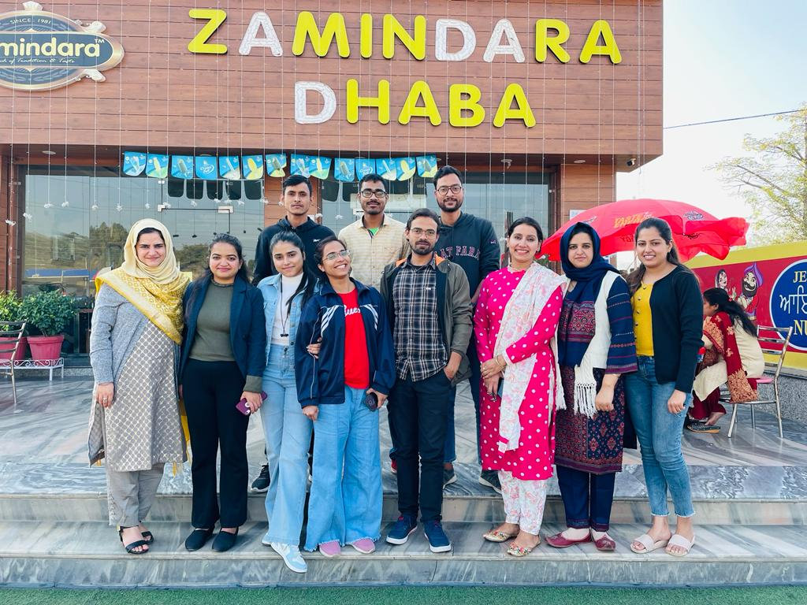 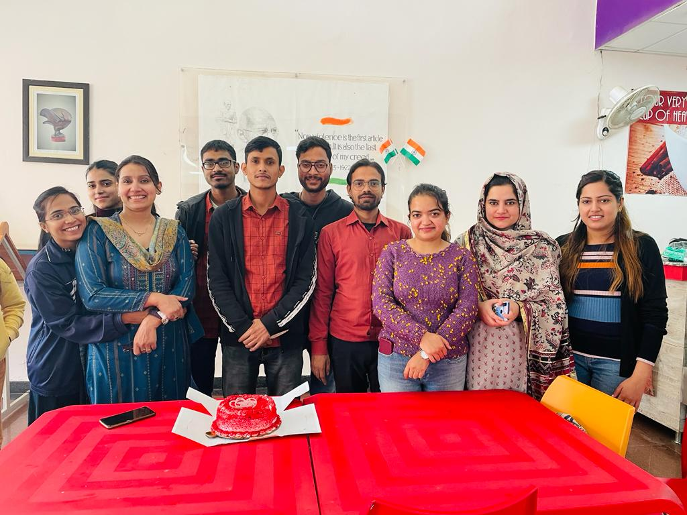 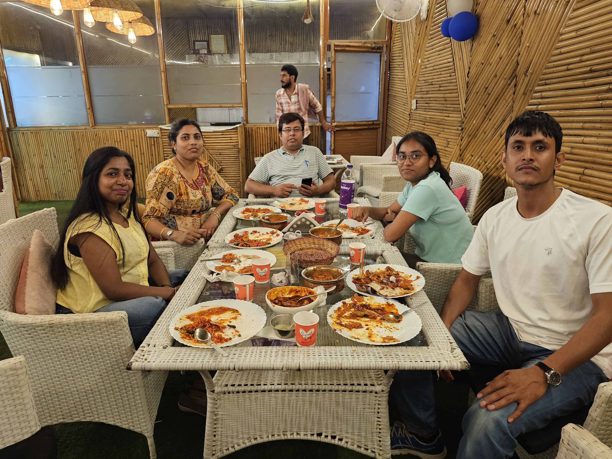 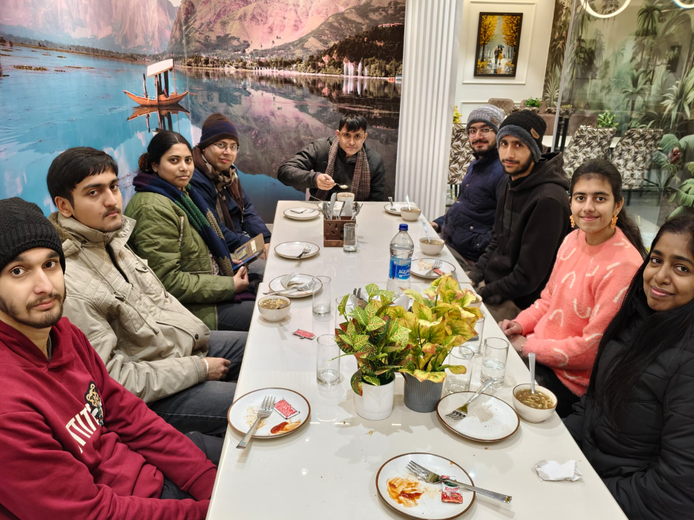 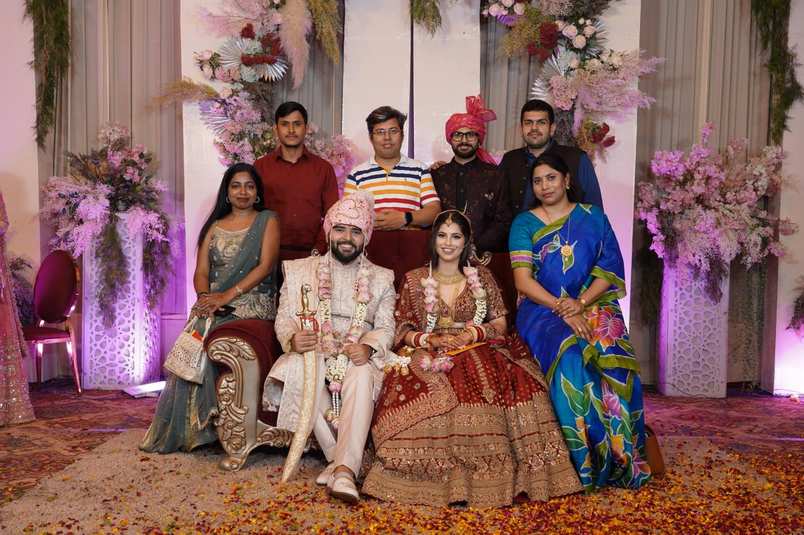 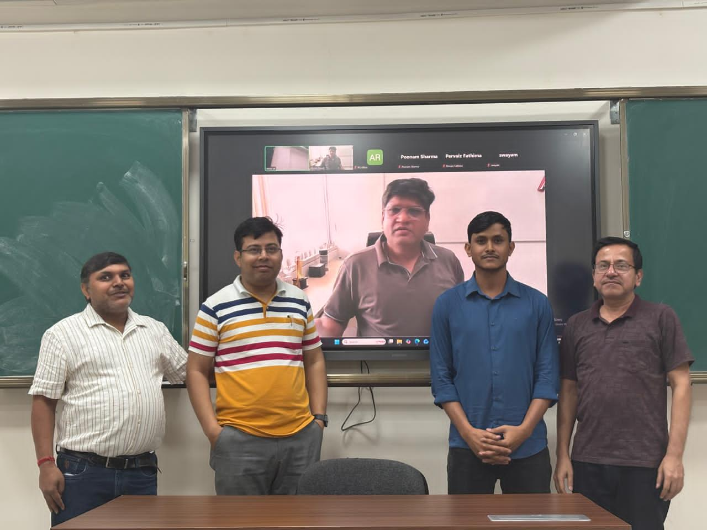 03 · Favorite books
A small shelf of favoritesBengali literature has a special place on my personal bookshelf. I am drawn to stories that mix mystery and adventure with human relationships, nature, imagination, and the texture of everyday life. I also enjoy books that connect ideas from computer science and decision-making with everyday life. 10
favorites ফেলুদা সমগ্র ১Satyajit Ray Goodreads ↗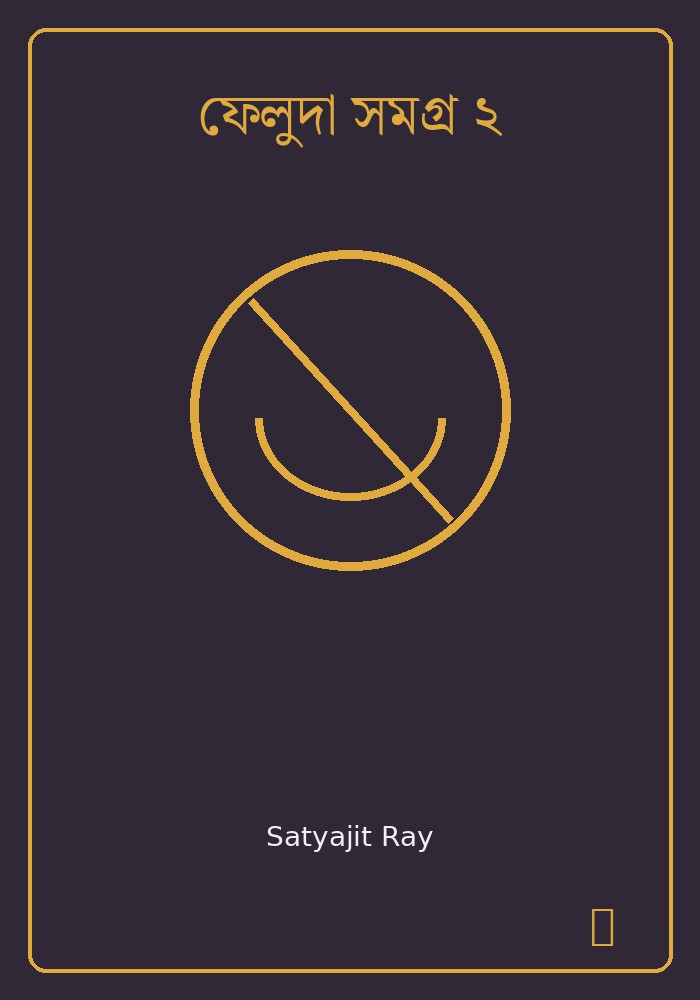 ফেলুদা সমগ্র ২Satyajit Ray Goodreads ↗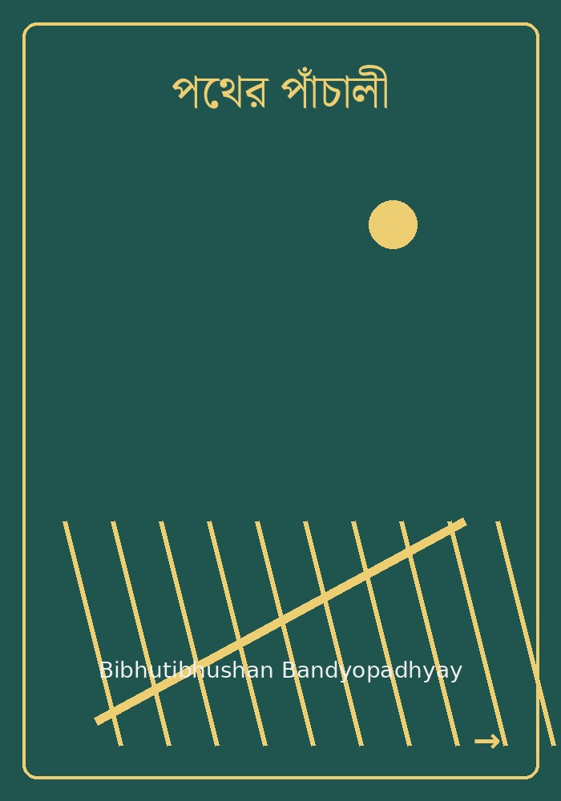 পথের পাঁচালীBibhutibhushan Bandyopadhyay Song of the Road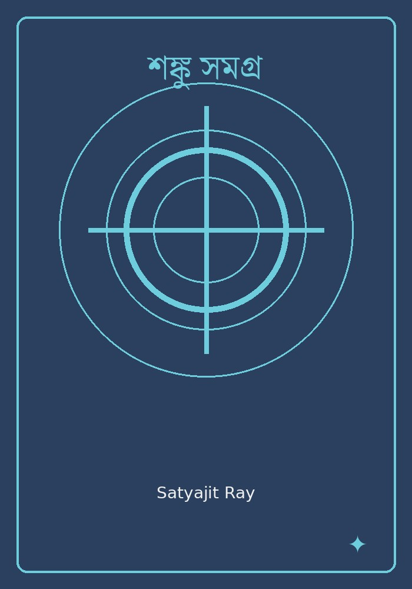 শঙ্কু সমগ্রSatyajit Ray Goodreads ↗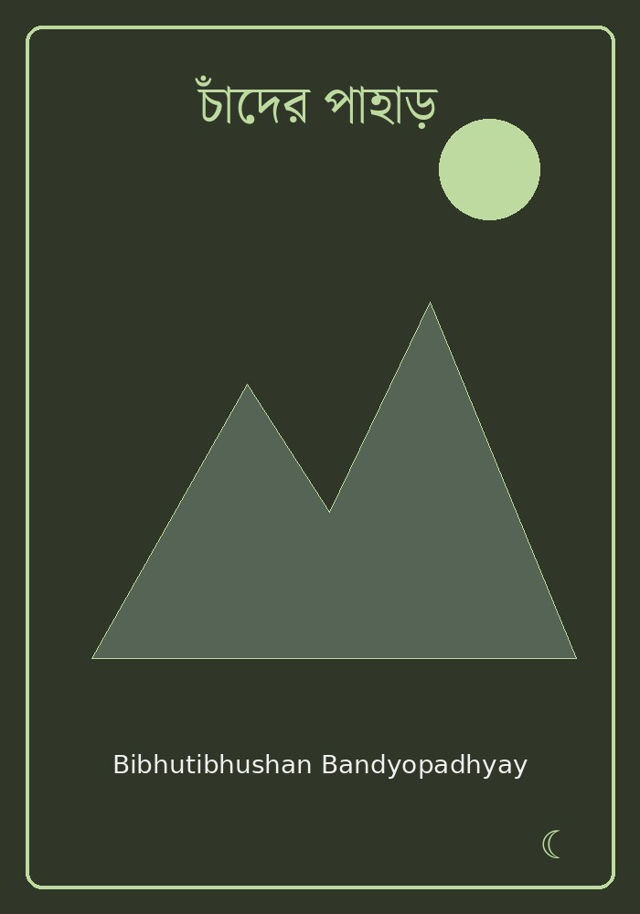 চাঁদের পাহাড়Bibhutibhushan Bandyopadhyay Adventure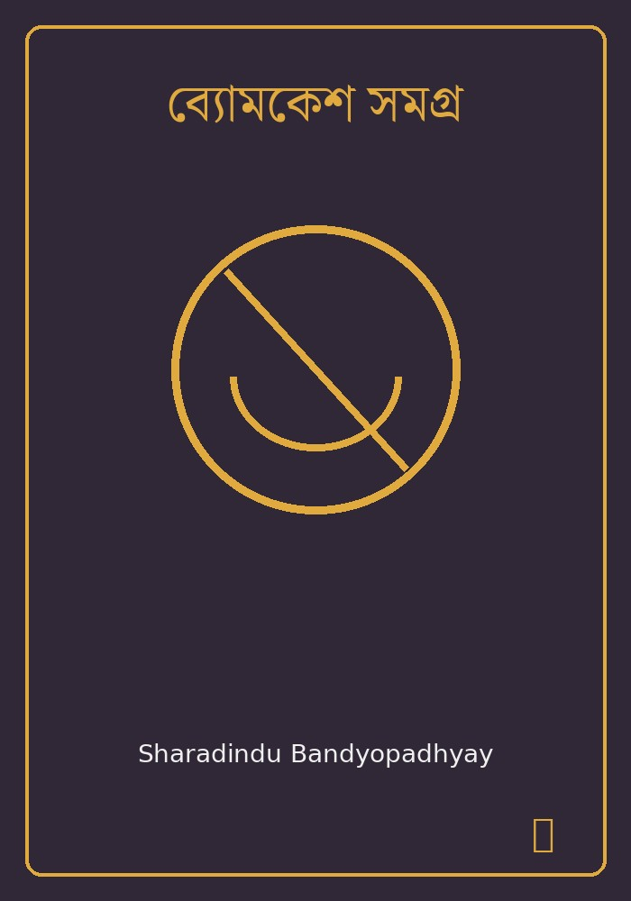 ব্যোমকেশ সমগ্রSharadindu Bandyopadhyay Goodreads ↗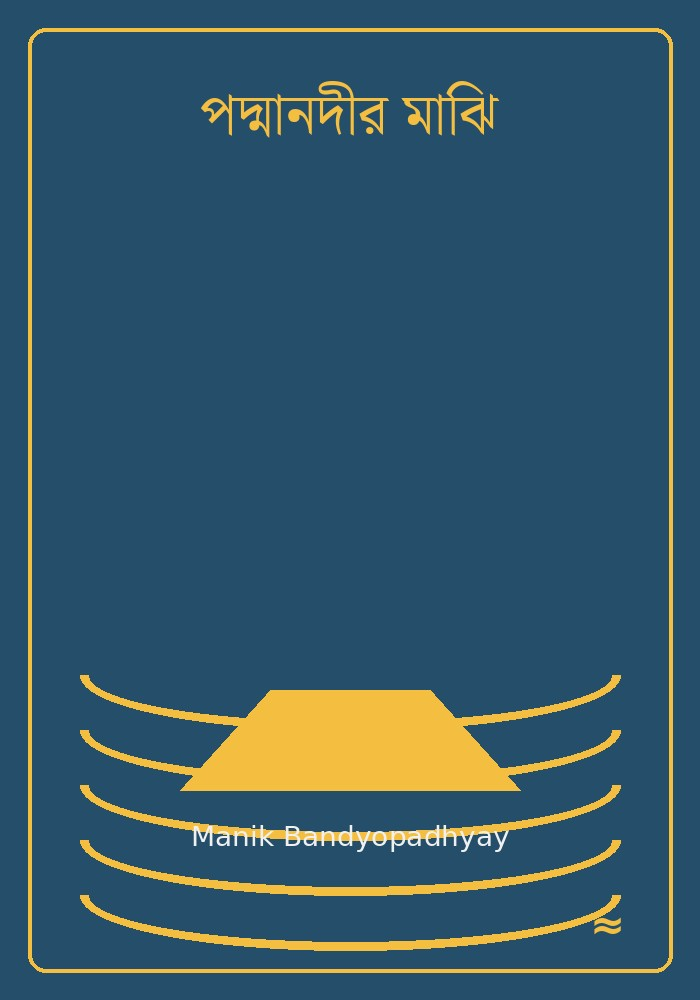 পদ্মানদীর মাঝিManik Bandyopadhyay River & life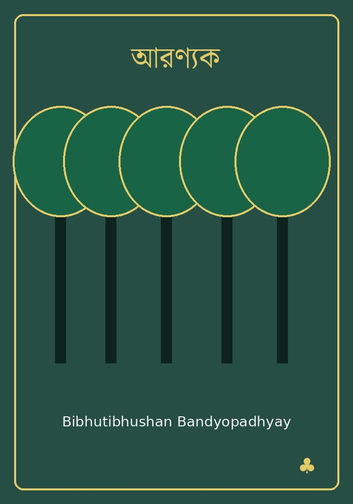 আরণ্যকBibhutibhushan Bandyopadhyay Nature & solitudeThe New Rules for MenEsquire Amazon ↗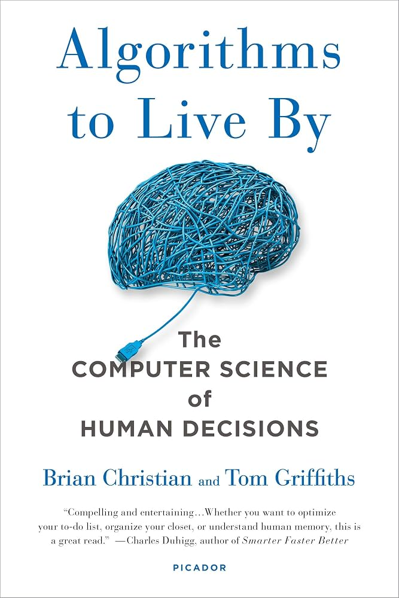 Algorithms to Live ByBrian Christian & Tom Griffiths Amazon ↗
What I like about these books
There is a wonderful range here: the sharp observation of Feluda and Byomkesh, the imagination of Professor Shanku, the adventure of চাঁদের পাহাড়, and the deeply human worlds of পথের পাঁচালী, পদ্মানদীর মাঝি, and আরণ্যক. Alongside them, The New Rules for Men and Algorithms to Live By bring a different perspective: practical ideas, decision-making, and ways of thinking about everyday life. 04 · Things I enjoy
Simple things, lasting impressionsReadingEspecially Bengali fiction, mystery, adventure, and stories rooted in ordinary human life. ExploringNew places and unfamiliar surroundings make life feel a little larger. PeopleGood conversations, friendships, and shared experiences are among the best parts of any journey. MemoriesA photograph can turn an ordinary day into something worth remembering years later. 05 · A personal philosophy
Stay curious
““The important thing is not to stop questioning. Curiosity has its own reason for existing.”
—Albert Einstein Curiosity is one of the threads connecting the different parts of my life. It can lead to a research problem, a new book, an unfamiliar place, or simply a question about something seen on an ordinary day. I like keeping that sense of curiosity alive. 06 · Until next time
The page is still being written.This is intentionally a small collection rather than a complete biography. I will keep adding photographs, books, places, and moments as the journey continues. read·travel·learn·remember
|